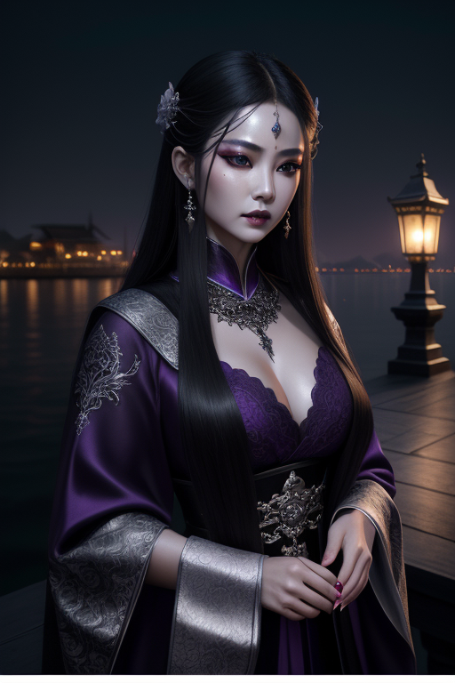

殷素素
越漂亮的女人越会骗人——她用生命给儿子上了最后一课。从邪教妖女到为爱赴死，殷素素是金庸笔下最刚烈的母亲。
人物小传
| 姓名 | 殷素素 |
| 身份 | 天鹰教紫微堂主（白眉鹰王殷天正之女） |
| 配偶 | 张翠山（武当七侠之一） |
| 子女 | 张无忌 |
| 武功 | 鹰爪擒拿手、蚊须针 |
| 性格 | 聪慧、刚烈、亦正亦邪 |
| 结局 | 与张翠山在武当山上双双自杀 |
殷素素是倚天屠龙记中最悲剧也最刚烈的女子。她临死前对张无忌说的那句话——"越漂亮的女人越会骗人"——是她用生命给儿子上的最后一课。
性格分析
邪派大小姐的蜕变
殷素素出身天鹰教——金庸世界中最标准的"邪派"。她从小在刀光剑影中长大，精明能干、心狠手辣。但遇到张翠山之后，她的人生发生了180度的转变。
她爱上了一个"正派"大侠，于是她努力想做一个好人。她跟着张翠山在冰火岛上过了十年最简单、最幸福的日子。这十年洗去了她的"邪气"，让她成为了一个温柔的妻子和母亲。
但江湖不接纳她。当她回到中原，所有人都用"她是魔教妖女"来攻击她、攻击张翠山。最终她和张翠山一起选择了自杀——这是她对这个世界最后的反抗。

命运轨迹
奇遇与转折
冰火岛十年：塞翁失马
被漂流到冰火岛本是一场灾难，但对殷素素来说却是人生最大的幸运。在岛上她远离了江湖纷争，做回了最简单的自己——一个妻子、一个母亲。这十年是她一生中最幸福的时光，也证明了她的本质是善良的。唯一的悲剧是：这个"善良的她"不被江湖接纳。
武功绝学
鹰爪擒拿手
天鹰教祖传武功，以灵巧和狠辣著称。
情感世界
对张翠山：跨越正邪的爱
殷素素和张翠山的爱情，是金庸笔下最动人的正邪之恋之一。武当弟子爱上魔教妖女——这在当时的武林是大逆不道。但他们不在乎。冰火岛上的十年证明了：当剥离了门第和标签，两个人真正的相爱是可以超越一切的。
但江湖不是冰火岛。回到现实后，他们的爱情被现实击得粉碎。殷素素选择了自杀——不是因为不爱，而是因为太爱。她不想让张翠山因为她而身败名裂。这是最悲壮的"我爱你，所以我离开你"。
趣事典故
名场面：最后一句话
殷素素在武当山上用血写给张无忌的最后一句话，是倚天屠龙记最著名的台词。这句话影响张无忌一生——他后来遇到的赵敏、周芷若、小昭、殷离，每一个都是"越漂亮越会骗人"的例证。母亲的遗言成了儿子一生的魔咒。
现实启示
标签的暴力
殷素素的悲剧根源是标签——"魔教妖女"这个标签让她无论怎么努力都无法被正道接纳。现实中，我们也常常被标签限制：出身、学历、经历——但标签不等于人的全部。
母爱的极致
殷素素最后的遗言充满了智慧——"越漂亮的女人越会骗人"不是让张无忌怀疑所有女性，而是让他学会看人、学会保护自己。这是她作为一个母亲，在极短时间内能给孩子最好的礼物。
1. 不要被标签定义——你是谁，不由出身决定。
2. 有时候离开不是懦弱——是成全。